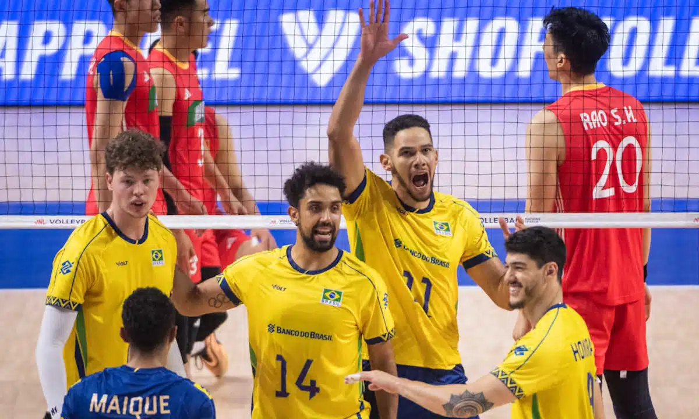
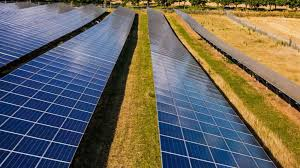

A equipe brasileira entra em quadra nesta quarta-feira (30 de julho de 2025) para enfrentar a China pelas quartas de final da Liga das Nações (VNL). A partida é vista como decisiva rumo à semifinal da competição. Depois de uma campanha sólida na fase classificatória, o Brasil terminou entre os quatro primeiros colocados, garantindo vaga direta nas quartas. O técnico Bernardinho destacou a importância da concentração e da disciplina tática diante da seleção chinesa, que tem mostrado evolução e surpreendeu ao eliminar adversários fortes na primeira fase. Entre os destaques da equipe brasileira estão o levantador Bruninho, o oposto Alan e o central Lucão, que têm liderado o time com experiência e técnica. A expectativa é de um confronto equilibrado, já que a China também chega embalada por boas atuações, com um jogo veloz e forte no saque. A partida será realizada às 21h (horário de Brasília), com transmissão ao vivo nos canais de esportes. O vencedor garante vaga na semifinal e segue na disputa pelo título da edição 2025 da VNL.
A Seleção Brasileira feminina de futebol volta a campo nesta quinta-feira (1º de agosto de 2025) para enfrentar o Japão nas semifinais dos Jogos Olímpicos de Paris. A partida será disputada no Stade de Lyon, às 17h (horário de Brasília), com transmissão ao vivo. O Brasil chega embalado após vencer a Alemanha por 2 a 1 nas quartas de final, com gols de Debinha e Geyse. A técnica Pia Sundhage elogiou a postura ofensiva da equipe e afirmou que a semifinal será um grande desafio. Se vencer, o Brasil garantirá vaga na final olímpica e a chance de conquistar uma medalha inédita de ouro no futebol feminino.
O Brasil inaugurou em Pirapora, Minas Gerais, o maior parque solar da América Latina, com capacidade de 1,5 GW, suficiente para abastecer 1,2 milhão de casas. O projeto gerou cerca de 10 mil empregos na construção e 1.500 na operação, com investimento superior a R$ 5 bilhões. Essa iniciativa aumenta a participação da energia solar na matriz elétrica brasileira para 22% em 2025, reforçando o compromisso do país com a energia limpa e a agenda climática global. O governo planeja alcançar 50% da matriz energética com fontes renováveis até 2030.
 Voltar para o perfil